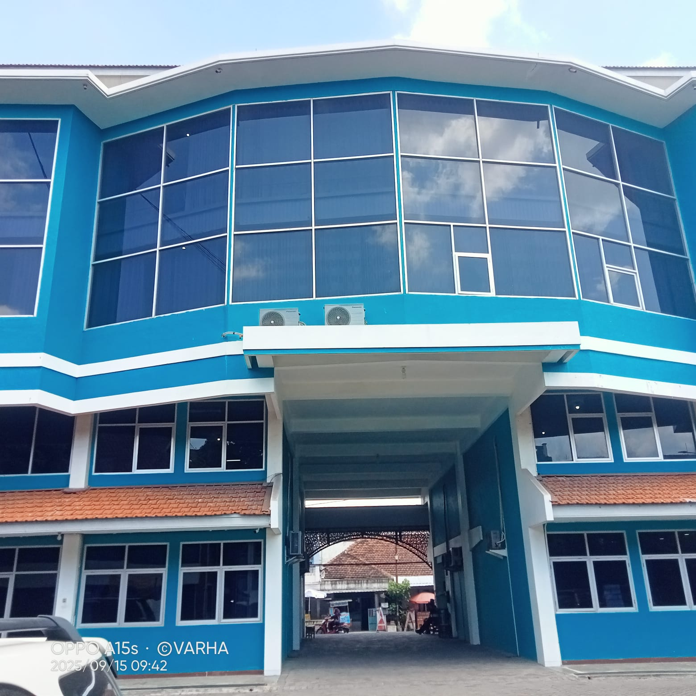

Sistem Informasi Manajemen Daftar Barang Ruangan
UIN Syekh Wasil Kediri
6
86
1250
45 M

Gedung pusat administrasi kampus tempat berbagai kegiatan tata kelola dan pelayanan akademik berlangsung.
Penanggung Jawab : Kabag Umum
Jumlah Ruangan : 32
Jumlah Aset : 1.250